PETJAM - TURNING CALORIES INTO CONNECTION
ROLE
UX Designer & Illustrator
TIMELINE
2025
TOOLS
Figma, Aseprite, Miro
PetJam is a WatchOS experience that transforms cold fitness data into a living, breathing companion. By leveraging HealthKit and SpriteKit, the app converts daily active calories into "food tiers" for a virtual pet that lives on the user's wrist.
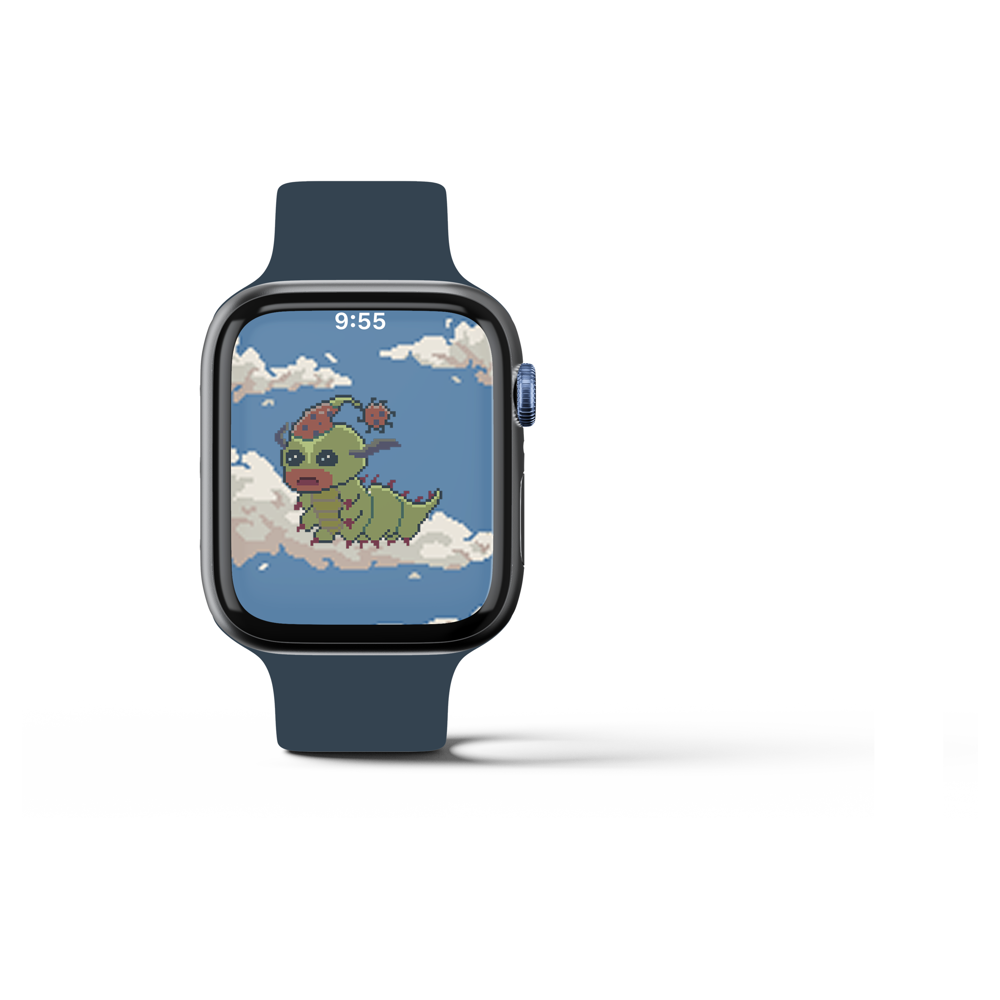
THE BEGINNING
The Apple Watch is often seen as a tool for cold data; be it counting steps or tracking heart rates. But, we understand that numbers alone rarely sustain long-term motivation. When faced with the brief to "use Apple technology in appropriate ways," our team identified a significant pain point: the emotional disconnect between a user and their fitness metrics.
We realized that traditional fitness trackers show progress, but they don't make you care, so, we decided to pivot from a data-centric tracker to an emotion-first companion. By merging HealthKit's passive tracking with the nostalgic nurturing of a 90s virtual pet, we transformed the invisible calorie into a tangible lifeline for a digital friend.
Bridging the gap between abstract health metrics and tangible emotional stakes through gamification.
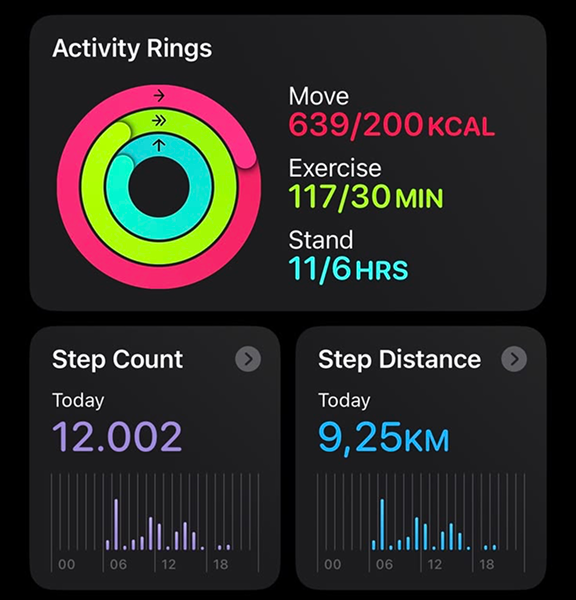
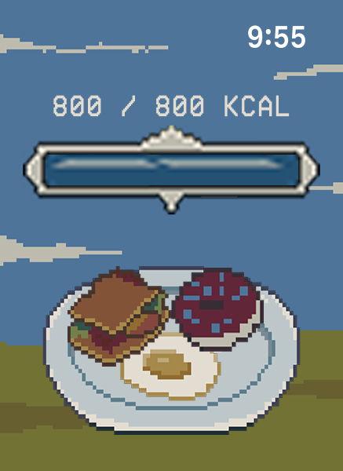
DESIGNING FOR CONSISTENCY
The core challenge of any fitness application is usually "The Drop-off", which is the moment a user loses interest because the data feels abstract and the effort feels unrewarded. To solve this, we designed PetJam around a Positive Feedback Loop that replaces clinical goals with emotional stakes.
Using the Octalysis Framework, I prioritized four core drives to ensure users felt a sense of duty and daily accomplishment. By converting calories into "Food Tiers," we turned a background health metric into a vital survival resource. The design goal was simple: make the user's consistency the only thing standing between their pet's growth and its demise.
The Psychological Framework (Octalysis)
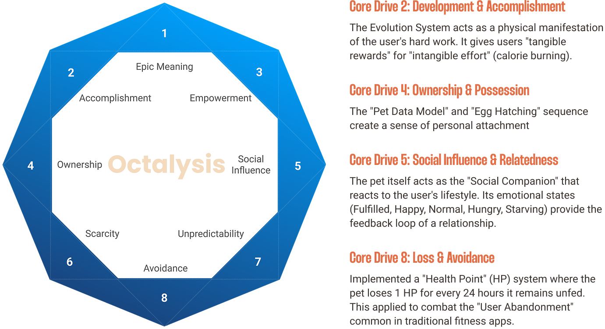
Image courtesy: www.yokaichou.com (Octalysis framework)
HABIT OVER INTENSITY
In the world of fitness, consistency is often harder to achieve than intensity. We made a strategic UX decision to set our calorie thresholds at a "mid-range" level (400–600 kcal) which attainable through daily movement and light exercise. This lowered the barrier to entry, ensuring the app felt accessible to casual users while still requiring a daily commitment to keep their pet healthy.
The core loop is simple but effective: Real-world movement (HealthKit) --> Food Tiers --> Pet Evolution. This creates a "low-friction" habit loop designed for the "Before Bed" Ritual. Instead of checking the app mid-run, users check it at the end of the day to see what they've "earned," turning their daily activity into a moment of evening reflection and reward.
Core Loop of PetJam
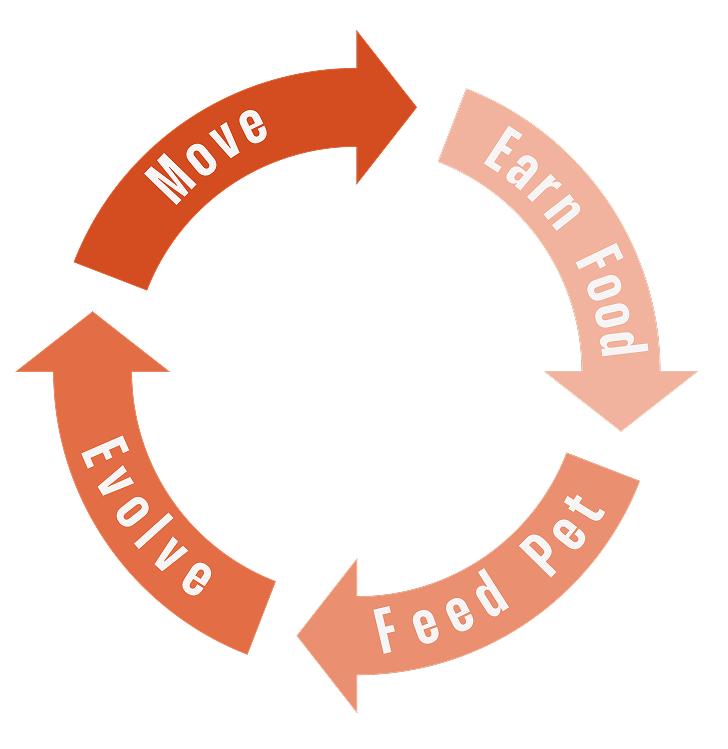
LEARNING PIXEL ART FROM ZERO
As the lead illustrator, my biggest challenge wasn't just drawing—it was learning the discipline of Pixel Art under a tight deadline. On a 40mm screen, every single pixel carries immense weight. I had to ensure that the pet's silhouette was recognizable at a glance, whether it was a "Baby" or a "Child" evolution.
The real complexity lay in animation fluidity. Since this was my first time working with sprites, I went through multiple iterations to find the balance between charm and technical performance. I focused on "micro-expressions", like a slight bounce when happy or a subtle droop when hungry to ensure that the user felt an immediate emotional pang of responsibility.
Iterative Character Design: Transitioning from static concepts to dynamic 1x pixel sprites, focusing on silhouette clarity and 'micro-expressions' to convey emotional states on a low-resolution display.
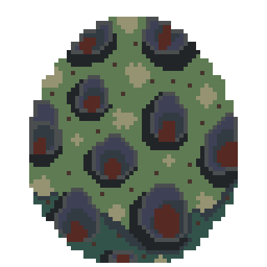
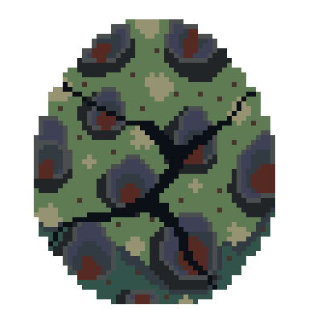
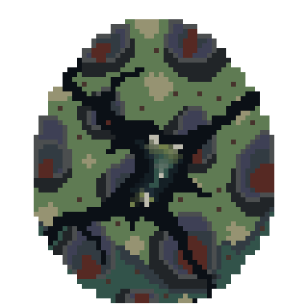
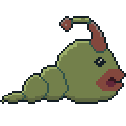
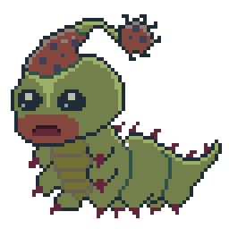
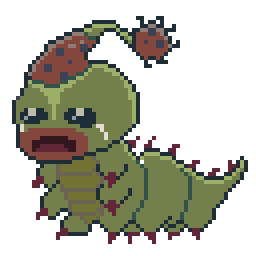
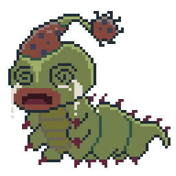
THE LOGIC ENGINE
To bring the pixels to life, we had to bridge the gap between biological data and digital behavior. We used HealthKit to track active calories passively, ensuring the user didn't have to "start" a workout for their pet to stay alive.
On the frontend, we implemented SpriteKit, Apple's 2D game engine. This was a strategic technical choice: SpriteKit allowed for energy-efficient, high-frame-rate animations that wouldn't drain the watch battery. The result was a seamless loop where real-world movement triggered "Food Popups," creating an instant gratification loop that rewarded the user for simply being active.
Mapping HealthKit calorie data to SpriteKit animation triggers, creating a seamless feedback loop where real-world movement directly fuels digital evolution.
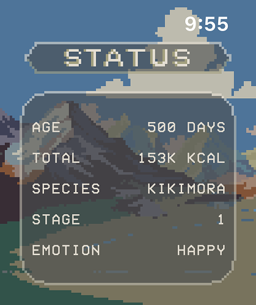
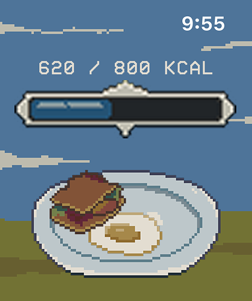
REFLECTION: EMBRACING THE EXPERIMENT
PetJam began as a technical challenge but evolved into a personal milestone in behavioral design. By moving away from high-pressure fitness metrics and focusing on a "consistency-first" model, we realized that playfulness is a powerful motivator for health.
I also learned that on a 1-inch screen, our most valuable assets are clarity and emotion. Learning to illustrate and animate under these conditions taught me that even within a strict brief, there is always space to explore, play, and grow. Looking forward, the next step would be expanding the ecosystem with social "battle" mechanics or more diverse species, further deepening the user's bond with their digital companion.
The Journey Continues: The project's impact extended beyond the initial one-month sprint. I am excited to share that PetJam is now available in Beta on the App Store, allowing us to gather real-world data and user feedback. This phase is just the beginning; we are committed to continuous iteration, with plans to expand the ecosystem through new pet species, social "battle" mechanics, and deeper HealthKit integrations.
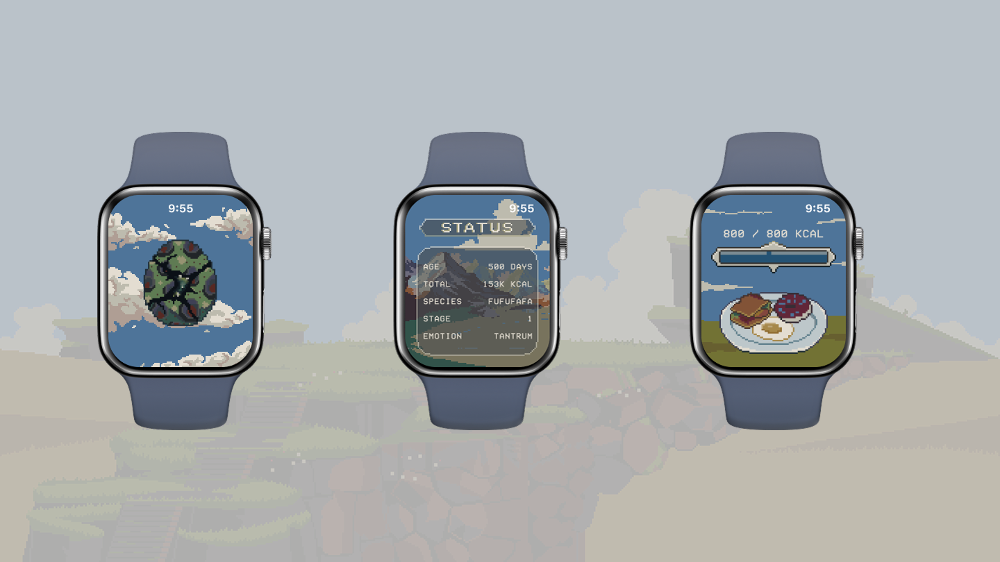
PREVIOUS
COMPAST - A COMPOST ASSISTANT
NEXT
WAIS - THINK IN COLORS
© 2025 ALL RIGHTS RESERVED